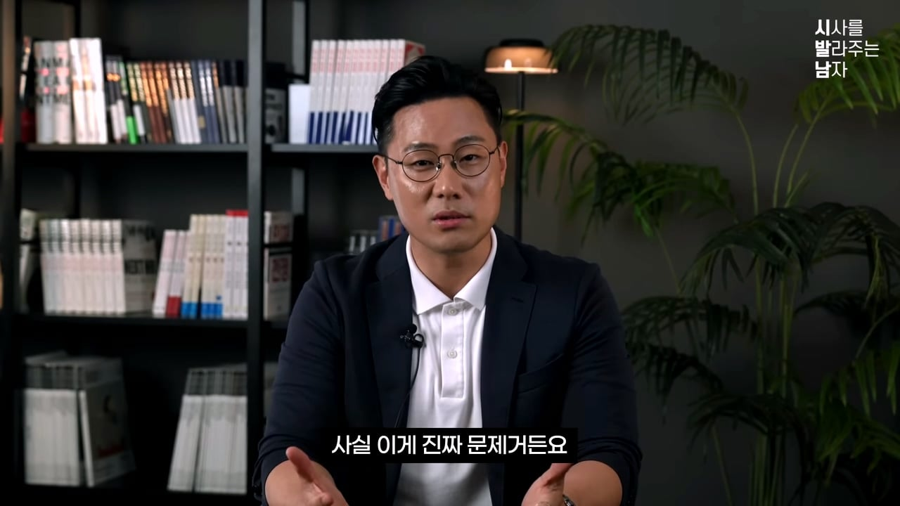
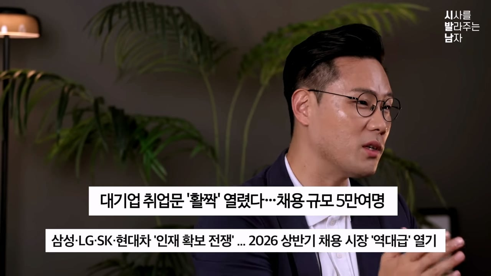
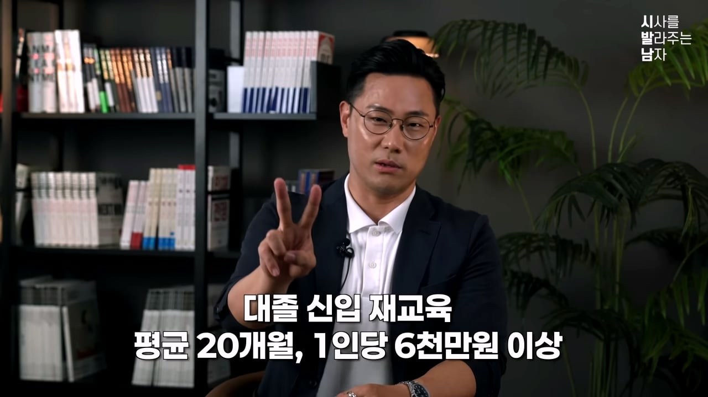
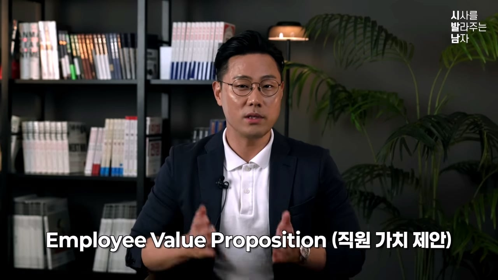
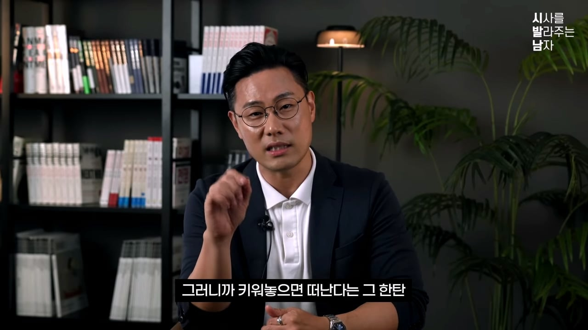
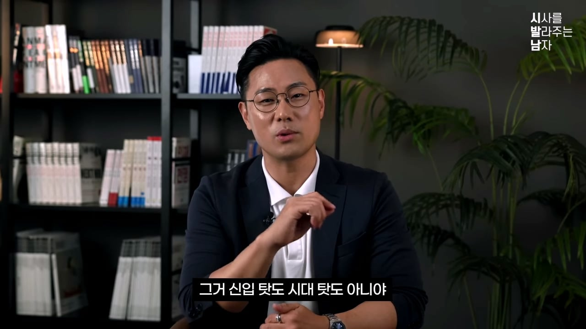

26년 6월 기준
25세에서 29세 사이 비경제 활동인구가
78만 4천 명이다
코로나 이후 최대 폭으로 증가했다
비경제 활동인구는 실업자가 아니고
구직 자체를 포기한 사람들 이다

비경제 활동인구는
구직을 포기했으니 실업자로 안 세니까
실업률 통계에 안 잡힌다
통계로 본다면 멀쩡한데
현실은 아니라는거다

올해 초 대기업들이 역대급 채용한다
채용 시장 풀린다 등등
이상한 이야기 많이 했다
나도 좋은 곳 가나?라는 생각도 했을 것이다
내가 이거 믿지말라고 했다
실제 뽑은 결과를 봐야된다
취준생들에게 물어보면 공고가 없다고 한다
체감은 정 반대다
실제로 조사해보니 진짜 줄었다
발표와 현실 공고가 따로 논다
우리는 의심을 해봐야된다
단순히 경기가 안 좋아서인가?
내가 보기에는 아니라고 생각한다
신입 채용이 사라졌고
그 결과 중고신입의 채용도 영향 받는다
미래에는 경력 채용도 영향 받을거다
잠깐 줄어든게 아니라
돌아오지 않는 방식으로 갈지도 모른다
중고 신입 경력직도 영향을 받지만
요즘 사회 이슈인 신입채용으로
먼저 다뤄보겠다
신입 채용을 하지 않는 기업이
5년 뒤 어떤 결과를 마주하는가에 대해서
뒤에 나올 예정
기업들이 왜 신입을 안 뽑고 경력직을 뽑겠냐
기업이 멍청해서가 아니라
합리적이라서 그런거다
경영자 입장에서 경력직이 이득인거다
신입 안 뽑는 이유 3가지로 정리하겠다
옛날에는 한 회사 들어가면 평생 다녔다
지금은 이직 많이 하고
이직 안하면 큰일 나는 줄 아는 사람도 있다
오래 다닌 사람에게
아직도 그 회사 다녀?라는 이야기 많이 한다
재밌는건데 퇴사도 주기가 있다
홀수 년차에 퇴시 많이한다
일 배워서 몸값 오르면 옮기는거다

경영자 입장에서는 이직하면 짜증난다
경총에서 조사한 자료다
신입 1인분 하게 들어가는 돈은
1인당 6천만원 이상이라고 한다
대기업의 경우 1억 넘는다
1인분 하려니까 이직해버린다
기업도 결국 경력직 선호하게 된다
AI라는 대체재가 결정타로 등장했다
신입의 경우 간단한 일부터 한다
그 일을 AI가 대신해버렸다
아까 신입 키우는데 6천 든다고 했다
AI는 구독료만 내면 된다
경제 좋다고하는 사람 있는데
주식 투자로 돈 많이 번 사람들인거같다
한국의 경제상황은 최악이다
한 번 뽑으면 해고가 어려우니까
신입 채용이 줄어들었다
처음 부터 검증된 사람을 최소한으로 뽑는다
결국 채용은 보수적으로 변해버렸다
청년을 보호하기 위해 만든 규제가
신입의 문을 좁게 만들었다
결국 기업은 정규직 채용 대신
임시직 인턴 늘렸다
꾸준하게 임시직 인턴 자리는
계속 늘어나고 있다
인턴은 기업 입장에서 부담이 전혀 없다
계약 끝나면 해고하면 된다
중간 정리하겠다
키워도 떠난다
신입보다 AI가 잘한다
경기도 안 좋고 고정비 부담이다
3개가 맞아떨어져서
경력직 채용을 선호하게 되었다
합리적인 선택이
기업이 자기 무덤 파는 짓일 수도 있다
경력 채용으로만 괜찮은 것인가에
대해서 다뤄 볼 예정
앞에서 기업은 바보가 아니라고 했다
가장 합리적인 게 경력채용이였다
반대로 직원 입장으로 생각해보겠다
돈 때문인가? 싶지만 아니다
수천 명 만나서 퇴직사유 분석해봤다
첫 이직 사유는
27.8%가 미래가 불안해서
일이 재미없어서가 11.2%다
이직동기 관련해서 물어보면
개인적 성장 기회 30% 넘었다
최근에 경력진단기라는거 개발했다
만명 가까운 데이터 모였다
거기서 가장 커리어 고민 1번은
67%가 내가 시장 경쟁력이
있을지 모르겠다는 것
돈도 중요하지만
내가 이 회사에서 성장할 수 있을까?
이 회사에 미래가 있나 이걸 본다는거다
회사가 사람 붙잡을 방법은
돈 말고 없었다
돈 밖에 없으니까 돈으로 사람을 묶었다
돈 보고 떠난다는거다
다른 회사에서 10% 더 준다고 하면
바로 떠난다
뒤집어보면 우리회사는 돈 밖에 없다는거다
직원이 의리가 없는게 아니라
붙잡을 이유를 회사가 안 만든거다
직원 입장에서 보면
그 회사에 남을 이유가 없다는거다
최근에 있던 케이스다
같은 업종, 같은 시기, 정반대 선택했다
한개는 망했고 한개는 성장했다
서킷시티라는 회사가 있다
미국 2위 가전 유통 업체다
2007년 3월 28일에
경력 많고 임금 높은 직원 3,400명 잘랐다
그 회사는 이걸 임금 관리 정책으로 불렀다
이걸로 1억 4천만 달러 아낀다고 자랑했다
금융위기 터진 2009년에 회사 사라졌다
정반대로 간 케이스가 코스트코다
업계 평균 보다 높은 임금 제공
매니저의 85%를 내부 승진시켰다
소매업 평균 이직률이 60%다
코스트코의 경우 6~8%다
사람이 안 떠났고 노하우가 쌓였고
그게 매출이 되었다
지금은 세계 3위 유통업체다
돈만 많이 준 게 아니다
여기 다니면 커리어 쌓인다
함께 성장한다, 미래가 있다를
직원이 체감하게 만들었다

전문용어로 EVP라고 한다
쉽게 말하면 우리 회사 다니면
돈 뿐만 아니라 이런 걸 얻을 수 있다는 것을
알려주는거다
직원이 남을 이유를 회사가 설계해주는거다
글로벌 리서치 기업 가트너에서 관련 조사했다
EVP 제대로 하면 이직률
최대 69% 낮춘다고 한다
강력한 EVP가진 기업은
50% 더 넓은 인재풀에 접근한다고 한다
사람 데려올 때 주는 웃돈을 절반까지 줄여버린다
EVP가 잡힌 회사는 사람이 안 떠나니까
몸값 전쟁 안한다


신입 탓, 시대 탓이 아니다
남을 이유를 안 만든 회사 탓이다
카르타고의 경우
돈으로 용병을 샀고 치안 맡겼다
결국 용병때문에 망했다
로마도 똑같이 용병때문에 망하긴했다
로마의 경우 군단병들이 필요했는데
군단병들에게 토지, 연금, 시민권 줬다
소속감과 미래를 제공해준거다
위기가 왔을 때 안 도망쳤다
로마의 경우 EVP로 정예군 만든거다
요즘 시대에 명예타령한다고 할텐데
사람은 다 똑같다
기술, 라이프스타일이 바뀐거다
500년 뒤 군주론에서 저렇게 말했다
경력직 절대 쓰지말라는 말 아니다
오해하지말아달라
경력직도 당연히 필요하다
핵심은 데려온 용병을 정규군으로 만든거다
온보딩, 멘토링, 의사결정에 참여
성장동력 보여주기
돈 이외 가치를 체감시키는 장치
핵심인재가 되게 만들어야된다
AI시대에 결과물이 다 평준화 된다
보고서, 분석도 AI가 한다
누가 봐도 비슷하다는거다
사람을 길러내는 문화는 AI가 못 만든다
경쟁사도 돈으로 빼가려고 해도 못 빼간다
스카우트로 가능하지만
문화, 체계, 시스템은 못 만든다
그 만큼 신입을 길러내는 능력이 중요해졌다
이상론이 아니라 이걸 실천한 기업이 나와버렸다
4년제 학사이상이라는
학력조건을 SK하이닉스가 폐지했다
직무역량과 성장 가능성만 보겠다는 것
SK가 미쳐서 그런게 아니라
전략적인 선택이다
AI가 지식 다 대체한다
무엇을 아는가 보다
어떻게 생각하는가가 경쟁력이다
그래서 학벌 간판 떼버렸다
길러낼 원석을 먼저 확보하겠다는 것
로마, 코스트코 사레를 SK가 하고 있는거다
정예군은 사오는게 아니라 길러내는거라고
정리하겠다
기업이 신입 안 뽑는거 합리적으로 보인다
키워도 떠난다 , AI가 더 싸다,
경기 최악이다
합리의 끝에는 카르타고, 서킷스트다
베테랑 잘라버렸고 베테랑 길러내지 못했다
지금의 경력직도 과거에는 신입이였다
시간이 지나면서 자연스럽게
경력직 된거다
모두가 사람 안 키우고 사오기만 할래? 한다면
망하는 지름길이 된다
사올 경력직 자체가 사라진다는 것
신입채용과 경력채용 둘다 필요하다
둘 다 챙기는게 시스템이 되면서
EVP는 단단해지게 된다
경력직으로 지금을 버티고 만들어 가되
신입을 길러서 미래를 만들어야된다
CEO도 이 관점에서 인사를 봐야된다
HR 정신 차려라
신입을 받는다는 것은 그들을 길러내겠다는건
우리 회사의 미래를
우리 손으로 만드는거다
호봉제는 미래의 내 임금이 얼마인지
확인가능 열심히 하든 안하든 안정적인 심리 상태
이직이 상대적으로 낮을거 같음
성과 연봉제는 뭐 빠지게 일하고 내 성과를
연봉 협상 때 존나게 증명 해야 함
근데 ㅈㅅ는 연봉협상이고 뭐고 없음
다같이 동결 오히려 안깍는걸 다행으로
여기라고 함
개인의 성과를 ㅈㅅ는 무시 해버리고
최저시급 때려버림
5년차랑 신입이랑 월급차이 20만원 이면
다닐 맛이 안나지
그러다 경력직 나가면 신입 쳐 뽑아다가
일 맡겨 보고 엉망진창 되는거 보고는
경력직 모집
이게 한두군데가 아니니 나사빠진 구조가
되는게 아닐까